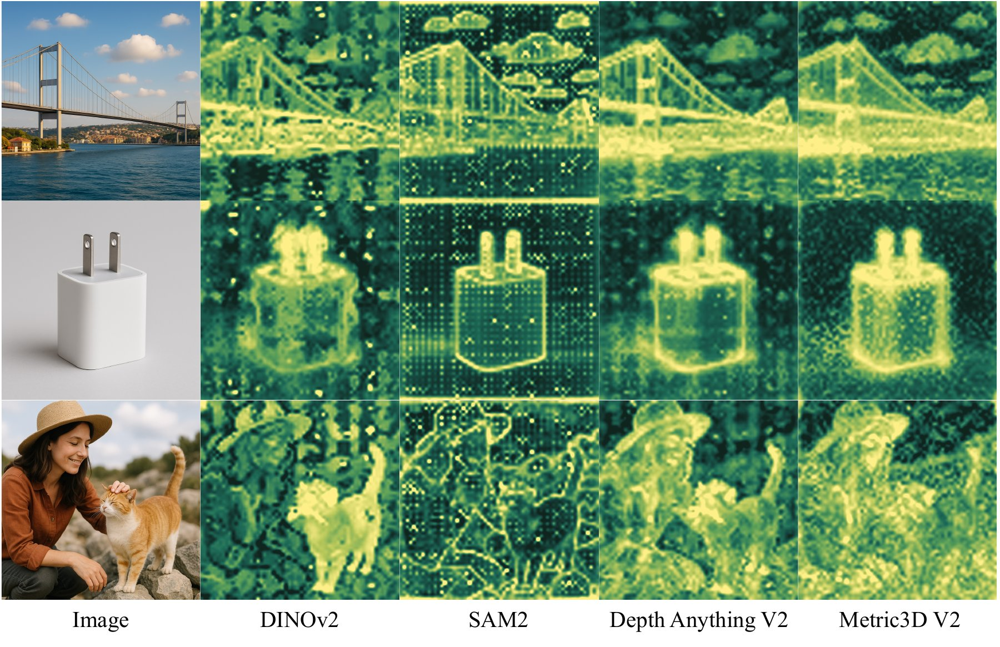
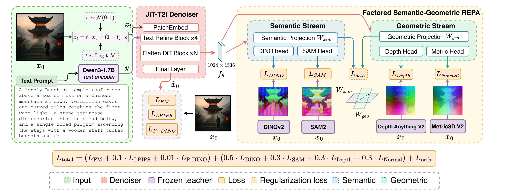
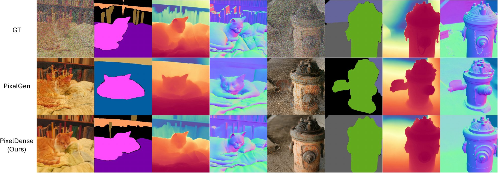
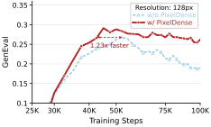
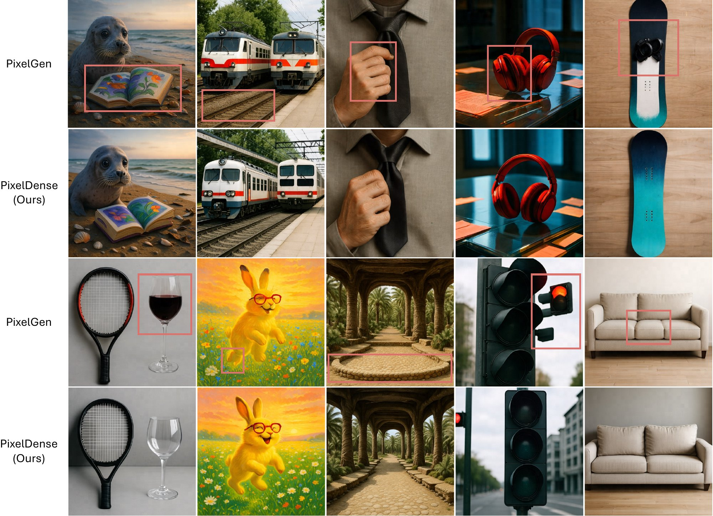
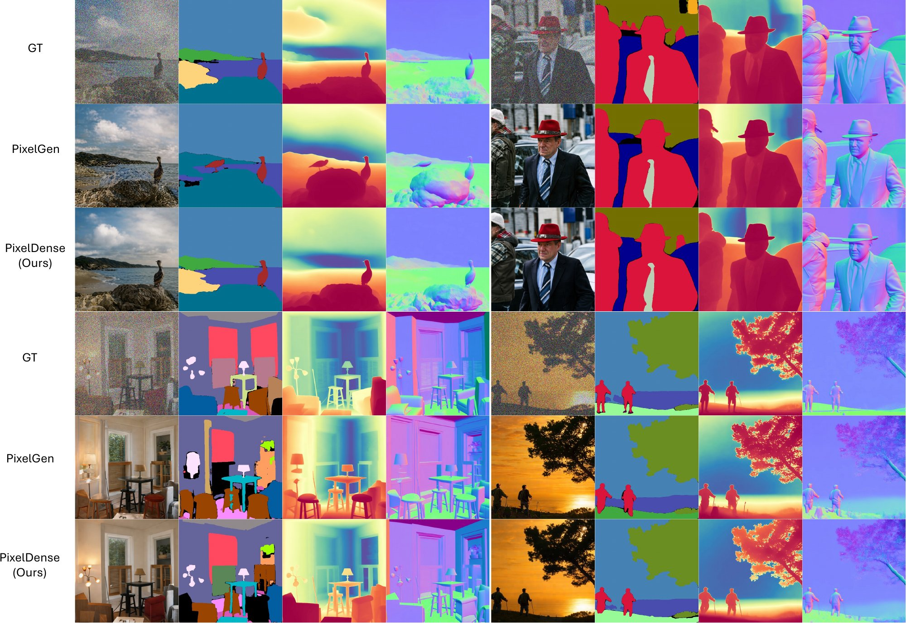

Representation alignment (REPA) accelerates diffusion transformer training, but its alignment targets are almost exclusively semantic encoders such as DINOv2 and CLIP. Recent analysis points to spatial structure, not global semantics, as the carrier of the alignment effect, yet dense-prediction foundation models trained to predict that structure remain overlooked as REPA targets. In pixel-space diffusion, SAM2, Depth Anything v2, and Metric3D v2 each outperform the DINOv2-only GenEval baseline, with the two geometric teachers leading the segmentation teacher. A flat sum of all four teachers, however, lands below the best single geometric teacher, semantic teachers reward viewpoint invariance and instance identity while geometric teachers reward metric layout and surface orientation, and forcing both kinds of gradients through one denoiser projection collapses them into a shared subspace. We introduce PixelDense, which routes DINOv2 and SAM2 through a semantic projection stream, routes Depth Anything v2 and Metric3D v2 through a geometric projection stream, and adds a weight-space orthogonality penalty that keeps the two streams in disjoint subspaces. All four teachers are frozen during training and dropped at inference. Applied to PixelGen and DeCo with a single recipe, PixelDense improves GenEval, DPG-Bench, and HPS v2.1, raises PixelGen-XXL's GenEval Overall from 0.7927 to 0.8093, and beats every single-teacher and unfactored multi-teacher variant. In partial-noise reconstruction, independent panoptic, depth, and surface-normal probes show up to 53.1% PQ gain and 36.0% depth AbsRel reduction at τ = 0.5 across COCO and Flickr30K. From random initialization, PixelDense also reaches the baseline's peak GenEval 1.23× faster.
All four dense teachers are dropped after training: the deployed model is the original RGB generator with its original sampler, so inference cost is unchanged.
REPA matches intermediate denoiser features to a frozen encoder and speeds up diffusion training by an order of magnitude without changing inference. Its targets, however, are almost always semantic encoders such as DINOv2 and CLIP. iREPA showed that the alignment benefit comes mainly from the teacher's spatial structure rather than its global semantics, and dense-prediction foundation models are trained precisely to expose that structure: instance and region boundaries from SAM2, monocular depth from Depth Anything v2, and surface normals from Metric3D v2. We ask whether this semantic and geometric knowledge can supervise an image generator during training, without needing any dense outputs at inference.
Pixel-space diffusion is a natural fit, because the denoiser tokens lie on the same RGB patch grid that dense teachers consume, so each token aligns directly with a spatially matched teacher feature. As Figure 2 shows, the two groups of teachers respond to complementary structure in the same image.

Figure 2. Semantic and geometric teachers light up complementary spatial structure in the same image. Columns show the RGB input and the per-patch RMS magnitude of spatially normalized features from DINOv2, SAM2, Depth Anything v2, and Metric3D v2 (yellow marks high response). DINOv2 fires on object regions and SAM2 on instance boundaries, while Depth Anything v2 traces depth-ordered silhouettes and Metric3D v2 traces surface-normal layout.Dense teachers help individually, but compete under a flat sum. On a PixelGen text-to-image backbone, each of SAM2, Depth Anything v2, and Metric3D v2 improves GenEval Overall over the DINOv2-only baseline when added as an alignment target, and the two geometric teachers lead the segmentation teacher. Yet summing all four REPA losses through a single denoiser projection lands below the best single geometric teacher (0.8036 vs. 0.8069). Semantic encoders reward viewpoint invariance and instance identity, while geometric encoders reward metric layout and surface orientation. When both kinds of gradients share one feature basis, the teachers compete instead of compose. Adding more teachers is therefore not enough: teacher composition is a representation-routing problem.
PixelDense reads the token state \(\mathbf{h}_\ell\) at block 8 of a 16-block pixel diffusion denoiser and projects it into two parallel streams. Each stream feeds light per-teacher heads that are aligned to frozen teacher features with a tokenwise cosine loss.

Figure 3. PixelDense factors dense-prediction supervision into a semantic stream and a geometric stream. The pixel diffusion denoiser \(f_\theta\) takes the noisy image \(\mathbf{x}_t\) and a Qwen3 text embedding \(y\), and reads its block-8 token state into two parallel projections: a \(D_s = 768\) semantic projection \(W_\text{sem}\) aligned to frozen DINOv2 and SAM2 features, and a \(D_g = 1024\) geometric projection \(W_\text{geo}\) aligned to frozen Depth Anything v2 and Metric3D v2 features. A weight-space orthogonality penalty \(\mathcal{L}_\text{orth}\) on the rows of \(W_\text{sem}\) and \(W_\text{geo}\) keeps the two streams from collapsing into a shared subspace. The four teachers are frozen during training and dropped at inference.Two streams alone do not guarantee specialization, since both read the same denoiser token. If \(W_\text{sem}\) and \(W_\text{geo}\) learn the same row subspace, the streams compete for the same denoiser coordinates. PixelDense therefore penalizes the mean absolute cosine between every semantic row and every geometric row:
\[ \mathcal{L}_\text{orth}(W_\text{sem}, W_\text{geo}) = \frac{1}{D_s D_g}\,\bigl\|\bar{W}_\text{sem}\,\bar{W}_\text{geo}^{\top}\bigr\|_1, \qquad \bar{W}_{i,:} = \frac{W_{i,:}}{\|W_{i,:}\|_2}. \]The full objective adds the factored alignment losses and the orthogonality penalty to the backbone's flow-matching loss, with \(\lambda_\text{orth} = 0.01\) and \(\mathcal{L}_\text{aux}\) (LPIPS and Perceptual-DINO) inherited from PixelGen:
\[ \mathcal{L} = \mathcal{L}_\text{FM} + \underbrace{0.5\,\mathcal{L}^\text{F}_\text{DINO} + 0.3\,\mathcal{L}^\text{F}_\text{SAM} + 0.3\,\mathcal{L}^\text{F}_\text{DA2} + 0.3\,\mathcal{L}^\text{F}_\text{M3D}}_{\mathcal{L}_\text{align}} + \lambda_\text{orth}\,\mathcal{L}_\text{orth} + \mathcal{L}_\text{aux}. \]Only the denoiser, the two projections, and the four teacher heads receive gradients. After training, the teachers, projections, and heads are all discarded, and the deployed model is the original three-channel RGB generator with its original sampler.
We fine-tune the released 1.1B PixelGen-XXL backbone at 512×512 for 10,000 steps (effective batch size 256, 2×H200) on BLIP3-o-60K. Both backbones are pretrained with DINOv2 REPA, which stays active during fine-tuning, so the primary baseline is the matched DINOv2-only fine-tune. PixelDense improves GenEval Overall from 0.7927 to 0.8093, a 2.09% relative gain, along with DPG-Bench and HPS v2.1. The gains concentrate on the compositional axes that touch object boundaries, depth layout, and surface geometry.
Table 1. GenEval, DPG-Bench, and HPS v2.1 on the PixelGen-XXL backbone at 512×512. Higher is better. Bold marks PixelDense entries that improve over the matched PixelGen fine-tune.
| Model | Type | #Params | GenEval ↑ | DPG ↑ | HPS ↑ | ||||||
|---|---|---|---|---|---|---|---|---|---|---|---|
| Sing. Obj. | Two Obj. | Count. | Colors | Attr. | Pos. | Overall | |||||
| SDXL | latent | 2.6B | 98.00 | 74.00 | 39.00 | 85.00 | 23.00 | 15.00 | 0.55 | 74.7 | – |
| SD3 | latent | 8B | 98.00 | 84.00 | 66.00 | 74.00 | 43.00 | 40.00 | 0.68 | – | – |
| PixelDiT (1024 res) | pixel | 1.3B | 100.00 | 94.00 | 70.00 | 90.00 | 65.00 | 53.00 | 0.78 | 83.7 | 0.250 |
| PixelFlow | pixel | 0.9B | – | – | – | – | – | – | 0.60 | 77.9 | – |
| PixelGen | pixel | 1.1B | 99.00 | 88.00 | 59.00 | 90.00 | 70.00 | 70.00 | 0.79 | – | 0.281 |
| PixelGen + fine-tune | pixel | 1.1B | 99.38 | 88.89 | 57.50 | 89.36 | 69.00 | 71.50 | 0.7927 | 78.7 | 0.280 |
| PixelDense (Ours) | pixel | 1.1B | 99.38 | 89.39 | 58.75 | 93.09 | 70.50 | 74.50 | 0.8093 | 78.9 | 0.282 |
Text-to-image metrics do not measure whether a generation preserves the geometry of a specific input scene. We therefore corrupt an input image at noise level \(\tau \in \{0.5, 0.7, 0.9\}\), reconstruct it with its caption, and score the reconstruction with off-the-shelf probes that are independent of the REPA teachers: COCO-trained OneFormer (Swin-L and DiNAT-L) for panoptic PQ and mIoU, and Marigold for depth and surface normals. PixelDense preserves structure better than the matched PixelGen baseline on every dataset, reference type, probe, and noise level. The gap is largest at \(\tau = 0.5\) and narrows at \(\tau = 0.9\), where severe noise removes most of the input structure for both models.

Figure 4. Qualitative geometry preservation. The GT row shows the noised input with the reference segmentation, depth, and normal maps; the PixelGen and PixelDense rows show each reconstruction with the corresponding predictions. PixelGen shows more ghosting and structural distortion, while PixelDense better preserves the ground-truth geometry.Table 2. Partial-noise reconstruction from \(\mathbf{x}_t = (1-\tau)\mathbf{x}_0 + \tau\varepsilon\). OneFormer PQ/mIoU are averaged over Swin-L and DiNAT-L; depth cells report mean/median AbsRel after per-image affine fitting; normal cells report mean angular error in degrees. Pseudo references apply the same predictor to the original image. Higher is better for PQ and mIoU; lower is better for depth and normals.
| Dataset | Reference | τ | OneFormer PQ ↑ | OneFormer mIoU ↑ | Depth AbsRel ↓ | Normal err. (°) ↓ | ||||
|---|---|---|---|---|---|---|---|---|---|---|
| PixelGen | Ours | PixelGen | Ours | PixelGen | Ours | PixelGen | Ours | |||
| COCO val | Real panoptic | 0.5 | 23.23 | 31.43 | 37.67 | 45.47 | – | – | – | – |
| 0.7 | 15.70 | 21.31 | 30.64 | 36.59 | – | – | – | – | ||
| 0.9 | 7.99 | 9.64 | 22.19 | 24.26 | – | – | – | – | ||
| Pseudo orig. | 0.5 | 29.53 | 41.16 | 38.70 | 47.99 | 1.58/1.06 | 1.06/0.68 | 21.80 | 17.84 | |
| 0.7 | 18.93 | 26.51 | 30.73 | 37.32 | 2.09/1.54 | 1.63/1.12 | 26.90 | 23.48 | ||
| 0.9 | 9.28 | 11.40 | 21.86 | 24.11 | 2.83/2.24 | 2.61/2.03 | 33.20 | 31.94 | ||
| Flickr30K | Pseudo orig. | 0.5 | 19.66 | 30.09 | 19.51 | 28.73 | 1.61/1.14 | 1.03/0.68 | 22.45 | 18.25 |
| 0.7 | 11.03 | 16.70 | 14.41 | 18.62 | 2.22/1.70 | 1.66/1.21 | 28.12 | 24.62 | ||
| 0.9 | 4.19 | 5.90 | 9.47 | 10.94 | 3.01/2.49 | 2.77/2.31 | 34.97 | 33.88 | ||
Every added dense teacher improves GenEval Overall over DINOv2 alone, and the geometric teachers lead (Depth Anything v2 0.8069, Metric3D v2 0.8060, SAM2 0.8020). The naive four-teacher sum falls below the best single teacher under all three weightings. Full PixelDense reaches 0.8093 and outperforms all single-teacher and unfactored variants. Either stream alone scores lower, so the semantic and geometric cues are complementary under the factored objective, and the leave-one-out rows show that every teacher contributes. The design ablations favor projection widths that match the native teacher widths, a mid-network alignment block, and a moderate orthogonality weight.
Table 3. REPA teacher composition (GenEval Overall). The baseline (DINOv2 only, PixelGen fine-tune) scores 0.7927. DA2: Depth Anything v2; M3D: Metric3D v2.
| REPA teacher | GenEval ↑ |
|---|---|
| (a) Single teacher + DINOv2 | |
| + SAM2 | 0.8020 |
| + DA2 | 0.8069 |
| + M3D | 0.8060 |
| (b) Unfactored four-teacher sum | |
| Equal weight | 0.8036 |
| L2-normalized | 0.7970 |
| Reduced weights | 0.8009 |
| (c) Factored streams | |
| Semantic only (DINOv2 + SAM2) | 0.8022 |
| Geometric only (DA2 + M3D) | 0.7960 |
| Full PixelDense | 0.8093 |
| (d) Leave-one-out from PixelDense | |
| w/o DINOv2 | 0.7940 |
| w/o SAM2 | 0.8027 |
| w/o DA2 | 0.8025 |
| w/o M3D | 0.8037 |
Table 4. Ablations on PixelDense design choices (GenEval Overall). Each row changes one factor from the default; defaults are highlighted.
| Configuration | GenEval ↑ |
|---|---|
| (a) Bottleneck width (semantic / geometric) | |
| 512 / 512 | 0.8053 |
| 768 / 1024 (default) | 0.8093 |
| 1024 / 1024 | 0.8065 |
| (b) Alignment block | |
| Block 6 | 0.8075 |
| Block 8 (default) | 0.8093 |
| Block 10 | 0.8007 |
| (c) REPA weights (DINOv2 / SAM2 / DA2 / M3D) | |
| 0.3 / 0.3 / 0.3 / 0.3 | 0.8079 |
| 0.5 / 0.3 / 0.3 / 0.3 (default) | 0.8093 |
| 0.5 / 0.5 / 0.5 / 0.5 | 0.8081 |
| (d) Orthogonality weight \(\lambda_\text{orth}\) | |
| 0 | 0.8053 |
| 0.001 | 0.8077 |
| 0.01 (default) | 0.8093 |
| 0.1 | 0.8023 |
Our main runs fine-tune a model that already carries DINOv2 alignment. To test whether dense teachers also help without that head start, we train a pixel diffusion model from random initialization at 128×128 on BLIP3-o-60K, with and without PixelDense, under matched optimizer, batch size, and data ordering. PixelDense reaches the baseline's peak GenEval roughly 1.23× faster and stays above it for the rest of the 100K-step horizon, while the baseline drifts downward after its peak.

Figure 5. GenEval Overall vs. training steps from random initialization at 128×128.PixelDense is not tied to one backbone. Applying the same teachers, losses, hyperparameters, and checkpoint-selection rule to DeCo at 512×512, without retuning, improves both GenEval Overall and DPG-Bench over the matched DeCo fine-tune. The gain is smaller than on PixelGen, likely because DeCo starts from a stronger model, but the direction is consistent.
Table 5. The PixelDense recipe transfers to DeCo without retuning. Higher is better. Bold marks PixelDense entries that improve over the matched DeCo fine-tune.
| Model | GenEval ↑ | DPG ↑ | ||||||
|---|---|---|---|---|---|---|---|---|
| Sing. Obj. | Two Obj. | Count. | Colors | Attr. | Pos. | Overall | ||
| DeCo T2I, released checkpoint | 100.00 | 92.00 | 72.00 | 91.00 | 79.00 | 80.00 | 0.8600 | 81.4 |
| DeCo + fine-tune | 99.38 | 94.44 | 73.75 | 93.62 | 79.00 | 77.00 | 0.8620 | 81.4 |
| PixelDense (Ours) | 100.00 | 93.43 | 74.38 | 93.62 | 80.00 | 80.00 | 0.8690 | 81.8 |
We compare PixelGen and PixelDense on matched prompts and seeds, using the same 25-step sampler as the quantitative evaluation. The examples track the quantitative gains: object count, relative position, color binding, object boundaries, and perspective.

Figure 6. Text-to-image comparison between PixelGen and PixelDense. Red boxes mark PixelGen failures. PixelDense better preserves object counts, spatial relations, color binding, and scene geometry, yielding stronger prompt alignment and visual coherence.
Figure 8. Additional partial-noise reconstruction comparisons. Each block shows the noised input, the two reconstructions, and the panoptic (OneFormer), depth, and surface-normal (Marigold) probes. PixelDense tracks object boundaries, depth ordering, and surface orientation more faithfully than PixelGen.@inproceedings{yang2026pixeldense,
title = {PixelDense: Dense Prediction as Representation Alignment for Pixel Diffusion},
author = {Yang, Lehan and Qi, Daiqing and Zhang, Wenhao and Li, Avery and Yang, Yiqing and
Li, Yifan and Kong, Yu and Zheng, Haitian and Zhang, Zhifei and Lin, Zhe and
Jampani, Varun and Li, Sheng},
booktitle = {Advances in Neural Information Processing Systems (NeurIPS)},
year = {2026}
}